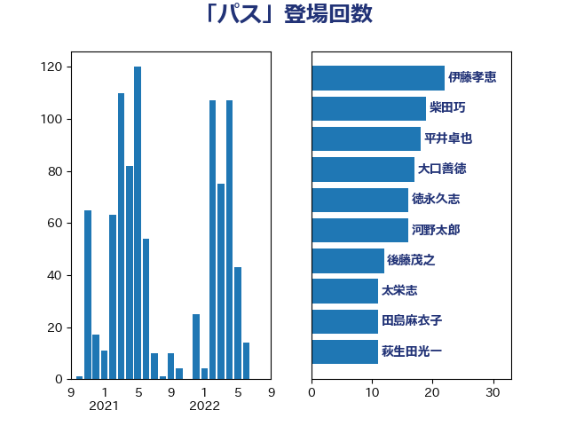

単語「パス」

| 伊藤孝恵 | 国民民主党 | 22 回 |
| 柴田巧 | 日本維新の会 | 19 回 |
| 平井卓也 | 自由民主党 | 18 回 |
| 大口善徳 | 公明党 | 17 回 |
| 徳永久志 | 立憲民主党 | 16 回 |
| 河野太郎 | 自由民主党 | 16 回 |
| 後藤茂之 | 自由民主党 | 12 回 |
| 太栄志 | 立憲民主党 | 11 回 |
| 田島麻衣子 | 立憲民主党 | 11 回 |
| 萩生田光一 | 自由民主党 | 11 回 |
| 岸田文雄 | 自由民主党 | 10 回 |
| 小西洋之 | 立憲民主党 | 9 回 |
| 斉藤鉄夫 | 公明党 | 9 回 |
| 田村憲久 | 自由民主党 | 9 回 |
| 青木愛 | 立憲民主党 | 9 回 |
| 末松信介 | 自由民主党 | 8 回 |
| 赤羽一嘉 | 公明党 | 8 回 |
| 城井崇 | 立憲民主党 | 7 回 |
| 梶山弘志 | 自由民主党 | 7 回 |
| 足立康史 | 日本維新の会 | 7 回 |
| 松原仁 | 立憲民主党 | 6 回 |
| 櫻井周 | 立憲民主党 | 6 回 |
| 自見はなこ | 自由民主党 | 6 回 |
| 音喜多駿 | 日本維新の会 | 6 回 |
| 井上信治 | 自由民主党 | 5 回 |
| 前原誠司 | 国民民主党 | 5 回 |
| 大野泰正 | 自由民主党 | 5 回 |
| 小林鷹之 | 自由民主党 | 5 回 |
| 尾身朝子 | 自由民主党 | 5 回 |
| 岸真紀子 | 立憲民主党 | 5 回 |
| 牧島かれん | 自由民主党 | 5 回 |
| 白石洋一 | 立憲民主党 | 5 回 |
| 藤田文武 | 日本維新の会 | 5 回 |
| 鈴木宗男 | 日本維新の会 | 5 回 |
| 中野英幸 | 自由民主党 | 4 回 |
| 丸川珠代 | 自由民主党 | 4 回 |
| 今枝宗一郎 | 自由民主党 | 4 回 |
| 小野田紀美 | 自由民主党 | 4 回 |
| 岩谷良平 | 日本維新の会 | 4 回 |
| 武井俊輔 | 自由民主党 | 4 回 |
| 石原正敬 | 自由民主党 | 4 回 |
| 足立敏之 | 自由民主党 | 4 回 |
| 青山大人 | 立憲民主党 | 4 回 |
| 上野通子 | 自由民主党 | 3 回 |
| 世耕弘成 | 自由民主党 | 3 回 |
| 井上貴博 | 自由民主党 | 3 回 |
| 伊藤俊輔 | 立憲民主党 | 3 回 |
| 国定勇人 | 自由民主党 | 3 回 |
| 大野敬太郎 | 自由民主党 | 3 回 |
| 平口洋 | 自由民主党 | 3 回 |
| 打越さく良 | 立憲民主党 | 3 回 |
| 玉木雄一郎 | 国民民主党 | 3 回 |
| 笠井亮 | 日本共産党 | 3 回 |
| 鈴木淳司 | 自由民主党 | 3 回 |
| 阿部知子 | 立憲民主党 | 3 回 |
| 高橋はるみ | 自由民主党 | 3 回 |
| 三木亨 | 自由民主党 | 2 回 |
| 三浦信祐 | 公明党 | 2 回 |
| 上田清司 | 国民民主党 | 2 回 |
| 中山展宏 | 自由民主党 | 2 回 |
| 中島克仁 | 立憲民主党 | 2 回 |
| 中谷一馬 | 立憲民主党 | 2 回 |
| 仁木博文 | 無所属 | 2 回 |
| 北神圭朗 | 無所属 | 2 回 |
| 塩村あやか | 立憲民主党 | 2 回 |
| 大岡敏孝 | 自由民主党 | 2 回 |
| 小林史明 | 自由民主党 | 2 回 |
| 小泉進次郎 | 自由民主党 | 2 回 |
| 川崎ひでと | 自由民主党 | 2 回 |
| 斎藤嘉隆 | 立憲民主党 | 2 回 |
| 日下正喜 | 公明党 | 2 回 |
| 杉本和巳 | 日本維新の会 | 2 回 |
| 東徹 | 日本維新の会 | 2 回 |
| 松川るい | 自由民主党 | 2 回 |
| 森屋隆 | 立憲民主党 | 2 回 |
| 森田俊和 | 立憲民主党 | 2 回 |
| 江島潔 | 自由民主党 | 2 回 |
| 浅田均 | 日本維新の会 | 2 回 |
| 熊谷裕人 | 立憲民主党 | 2 回 |
| 田村まみ | 国民民主党 | 2 回 |
| 田村智子 | 日本共産党 | 2 回 |
| 福田昭夫 | 立憲民主党 | 2 回 |
| 美延映夫 | 日本維新の会 | 2 回 |
| 羽田次郎 | 立憲民主党 | 2 回 |
| 舟山康江 | 国民民主党 | 2 回 |
| 菅義偉 | 自由民主党 | 2 回 |
| 赤池誠章 | 自由民主党 | 2 回 |
| 野上浩太郎 | 自由民主党 | 2 回 |
| 鈴木俊一 | 自由民主党 | 2 回 |
| 阿部司 | 日本維新の会 | 2 回 |
| 青山繁晴 | 自由民主党 | 2 回 |
| 高木かおり | 日本維新の会 | 2 回 |
| 高木啓 | 自由民主党 | 2 回 |
| こやり隆史 | 自由民主党 | 1 回 |
| 三原じゅん子 | 自由民主党 | 1 回 |
| 三谷英弘 | 自由民主党 | 1 回 |
| 中川正春 | 立憲民主党 | 1 回 |
| 伊藤岳 | 日本共産党 | 1 回 |
| 住吉寛紀 | 日本維新の会 | 1 回 |
| 古屋範子 | 公明党 | 1 回 |
| 吉川赳 | 無所属 | 1 回 |
| 吉田とも代 | 日本維新の会 | 1 回 |
| 吉良よし子 | 日本共産党 | 1 回 |
| 国光あやの | 自由民主党 | 1 回 |
| 大塚耕平 | 国民民主党 | 1 回 |
| 大西英男 | 自由民主党 | 1 回 |
| 守島正 | 日本維新の会 | 1 回 |
| 宮路拓馬 | 自由民主党 | 1 回 |
| 寺田静 | 無所属 | 1 回 |
| 小川淳也 | 立憲民主党 | 1 回 |
| 山口那津男 | 公明党 | 1 回 |
| 山崎正恭 | 公明党 | 1 回 |
| 山崎誠 | 立憲民主党 | 1 回 |
| 山本剛正 | 日本維新の会 | 1 回 |
| 山本博司 | 公明党 | 1 回 |
| 山田太郎 | 自由民主党 | 1 回 |
| 山谷えり子 | 自由民主党 | 1 回 |
| 岩渕友 | 日本共産党 | 1 回 |
| 岸信夫 | 自由民主党 | 1 回 |
| 平木大作 | 公明党 | 1 回 |
| 平林晃 | 公明党 | 1 回 |
| 平沼正二郎 | 自由民主党 | 1 回 |
| 斎藤アレックス | 国民民主党 | 1 回 |
| 有村治子 | 自由民主党 | 1 回 |
| 朝日健太郎 | 自由民主党 | 1 回 |
| 木原誠二 | 自由民主党 | 1 回 |
| 木村次郎 | 自由民主党 | 1 回 |
| 本庄知史 | 立憲民主党 | 1 回 |
| 本田顕子 | 自由民主党 | 1 回 |
| 松山政司 | 自由民主党 | 1 回 |
| 松本尚 | 自由民主党 | 1 回 |
| 柚木道義 | 立憲民主党 | 1 回 |
| 柿沢未途 | 無所属 | 1 回 |
| 梅村みずほ | 日本維新の会 | 1 回 |
| 森まさこ | 自由民主党 | 1 回 |
| 橋本聖子 | 無所属 | 1 回 |
| 武田良太 | 自由民主党 | 1 回 |
| 浅野哲 | 国民民主党 | 1 回 |
| 渡辺周 | 立憲民主党 | 1 回 |
| 渡辺孝一 | 自由民主党 | 1 回 |
| 渡辺猛之 | 自由民主党 | 1 回 |
| 田中健 | 国民民主党 | 1 回 |
| 田畑裕明 | 自由民主党 | 1 回 |
| 石垣のりこ | 立憲民主党 | 1 回 |
| 石川博崇 | 公明党 | 1 回 |
| 石川大我 | 立憲民主党 | 1 回 |
| 福島伸享 | 無所属 | 1 回 |
| 稲津久 | 公明党 | 1 回 |
| 稲田朋美 | 自由民主党 | 1 回 |
| 穀田恵二 | 日本共産党 | 1 回 |
| 竹谷とし子 | 公明党 | 1 回 |
| 芳賀道也 | 国民民主党 | 1 回 |
| 茂木敏充 | 自由民主党 | 1 回 |
| 藤井比早之 | 自由民主党 | 1 回 |
| 藤川政人 | 自由民主党 | 1 回 |
| 西村康稔 | 自由民主党 | 1 回 |
| 西銘恒三郎 | 自由民主党 | 1 回 |
| 道下大樹 | 立憲民主党 | 1 回 |
| 里見隆治 | 公明党 | 1 回 |
| 重徳和彦 | 立憲民主党 | 1 回 |
| 金城泰邦 | 公明党 | 1 回 |
| 鈴木憲和 | 自由民主党 | 1 回 |
| 鈴木敦 | 国民民主党 | 1 回 |
| 門山宏哲 | 自由民主党 | 1 回 |
| 阿部弘樹 | 日本維新の会 | 1 回 |
| 馬場伸幸 | 日本維新の会 | 1 回 |
| 高橋光男 | 公明党 | 1 回 |
| 高野光二郎 | 自由民主党 | 1 回 |
| 鰐淵洋子 | 公明党 | 1 回 |